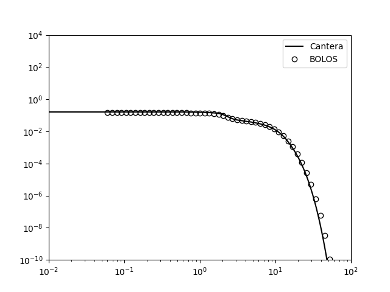

Note
Go to the end to download the full example code.
EEDF calculation#
Compute EEDF with two term approximation solver at constant E/N. Compare with results from BOLOS.
Air-plasma-Phelps.yaml mechanism file is derived from Phelps cross section data A compilation of atomic and molecular cross-section data assembled by A. V. Phelps in the 1970s–1980s for gases such as O₂, N₂, He, Ar, etc. The compilation itself is unpublished; data used from it are cited as: A. V. Phelps, private communication (compilation of electron cross-sections), retrieved [8/1/25], from Phelps collection. (see http://www.lxcat.net/contributors/#d19).
Requires: cantera >= 3.2, matplotlib >= 2.0

import matplotlib.pyplot as plt
import cantera as ct
gas = ct.Solution('example_data/air-plasma-Phelps.yaml')
gas.TPX = 300., 101325., 'N2:0.79, O2:0.21, N2+:1E-10, Electron:1E-10'
gas.reduced_electric_field = 200.0 * 1e-21 # Reduced electric field [V.m^2]
gas.update_electron_energy_distribution()
grid = gas.electron_energy_levels
eedf = gas.electron_energy_distribution
# results from BOLOS
cgrid = [6.000e-02, 6.908e-02, 7.954e-02, 9.158e-02, 1.054e-01, 1.214e-01, 1.398e-01,
1.609e-01, 1.853e-01, 2.133e-01, 2.456e-01, 2.828e-01, 3.256e-01, 3.749e-01,
4.317e-01, 4.970e-01, 5.723e-01, 6.589e-01, 7.586e-01, 8.735e-01, 1.006e+00,
1.158e+00, 1.333e+00, 1.535e+00, 1.767e+00, 2.035e+00, 2.343e+00, 2.698e+00,
3.106e+00, 3.576e+00, 4.117e+00, 4.741e+00, 5.458e+00, 6.284e+00, 7.236e+00,
8.331e+00, 9.592e+00, 1.104e+01, 1.272e+01, 1.464e+01, 1.686e+01, 1.941e+01,
2.235e+01, 2.573e+01, 2.962e+01, 3.411e+01, 3.927e+01, 4.522e+01, 5.206e+01,
5.994e+01]
cf0 = [1.445e-01, 1.445e-01, 1.445e-01, 1.445e-01, 1.445e-01, 1.445e-01, 1.445e-01,
1.445e-01, 1.445e-01, 1.444e-01, 1.444e-01, 1.444e-01, 1.443e-01, 1.442e-01,
1.441e-01, 1.439e-01, 1.436e-01, 1.431e-01, 1.422e-01, 1.408e-01, 1.389e-01,
1.360e-01, 1.318e-01, 1.256e-01, 1.161e-01, 9.910e-02, 7.723e-02, 6.190e-02,
5.368e-02, 4.878e-02, 4.461e-02, 4.041e-02, 3.588e-02, 3.094e-02, 2.564e-02,
2.009e-02, 1.446e-02, 9.423e-03, 5.364e-03, 2.571e-03, 1.085e-03, 3.935e-04,
1.172e-04, 2.766e-05, 4.955e-06, 6.462e-07, 5.744e-08, 3.272e-09, 1.149e-10,
4.822e-12]
fig, ax = plt.subplots()
ax.loglog(grid, eedf, c='k', label='Cantera')
ax.loglog(cgrid, cf0, ls='None', mfc='None', mec='k', marker='o', label='BOLOS')
ax.set(xlim=(1e-2, 1e2), ylim=(1e-10, 1e4))
ax.legend()
plt.show()
Total running time of the script: (0 minutes 0.390 seconds)